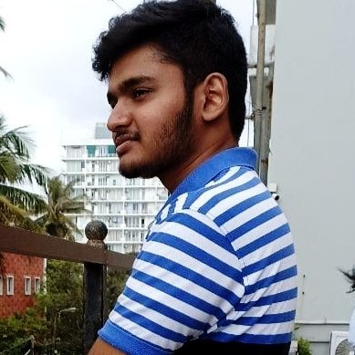

Nemsara Ranaba

Summary
I am Nemsara Ranaba currently enrolling with a web development course in Udemy.Also I am Undergraduate in University of Westminster.
My degree path way is Software Engineering.I started to develop a webstite that was a e commerce website for a client.But unfortunetly,I
Could not able complete that website using wordpress due to lack of knowledge about web development. Therefore I started to learn web
development using Udemy.
Education
- (2008-2021) - Completed the School Education
- (2022-2023) - Completed the foundation at Informatics Institute of Technology
- (2023-2027) - (Present) Undergraduate at University of Westminster
Work experience
- Worked as a Data Entry Operator at Light Up Candles Private Limited.
Skills
- Python
- Java
- JavaFx
- HTML
- CSS
- Java Script
- SQL
Awards and Certifications
- Completed the Foundation with a Distinction at Informatics Institute of Technology (2023)
- Won the 1 st place in Informatics Institute of Technology's Cutting Egde in Foundation Category.
(In this competition we created a project called CleanSri.This is prototyped app created for effiency of the wastemanagement of Sri Lanka) (2023)
- Completed the Computer Applied Information of Technology at Sri Lanka Telecom with a Distinction.(2022)
- Participated to Junior Software Developer Competition Powered up by Microsoft Sri Lanka & Western Provice Zonal Education (2012).
Hobbies
Contact